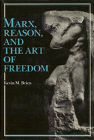

<body bgcolor="#FFFFFF" text="#000000" link="#0000FF" vlink="#CC0000" alink="#CC0000"><center><hr width="350" size="1" align="center" noshade>A systematic exploration of the problem of freedom in Marx<hr width="350" size="1" align="center" noshade><p><a href="https://cdcshoppingcart.uchicago.edu/Cart/ChicagoBook.aspx?ISBN=9780877224662&&PRESS=temple" target="_top">Buy this book!</a> | <a href="https://cdcshoppingcart.uchicago.edu/Cart/Cart.aspx?PRESS=temple" target="_top">View Cart</a> | <a href="https://cdcshoppingcart.uchicago.edu/Cart/Cart.aspx?PRESS=temple" target="_top">Check Out</a></p><p></p></center><!--none//--><h1>Marx, Reason, and the Art of Freedom</h1>
<h3>Kevin M. Brien</h3>
<P>cloth 0-87722-466-8 $37.95, May 87, <FONT COLOR=#990033>Out of Print</FONT>
<BR> 288 pp
</P><p>Here is the first philosophically systematic exploration of the problem of freedom in Marx. Emphasizing the scientific dimension of Marx’s mature method of explanation, Brien develops a philosophical reconstruction of Marx that draws on the full spectrum of his thoughts from its earliest to its latest stages. He addresses the problems involved in reconciling the deterministic elements of Marxism with the ideals of freedom.
<p>Brien provides a sketch of Marx’s view of human reality, analyzes Marx’s mature method of dialectical explanation, and provides his own dialectical presentation of the problem of freedom under three categories: freedom as transcendence, freedom as mode of being, and freedom as spontaneity.
<p>This book suggests a fresh reading of Marx, one capable of integrating the early and late works, reconciling the "scientific" and the "critical" dimensions of his thought, and accounting for the long problematic status of freedom in his philosophy It also brings out the philosophical continuity between Marx and Engels.
<BR>&nbsp;<H2>About the Author(s)</H2>
<P><b>Kevin M. Brien</b> is Assistant Professor of Philosophy at Washington College in Maryland.</P>
<BR><H2>Subject Categories</H2>
<p><A HREF="/tempress/philosophy.html" TARGET="_top">Philosophy and Ethics</a>
</p>
<p align="center"><a href="https://cdcshoppingcart.uchicago.edu/Cart/ChicagoBook.aspx?ISBN=9780877224662&&PRESS=temple" target="_top">Buy this book!</a> | <a href="https://cdcshoppingcart.uchicago.edu/Cart/Cart.aspx?PRESS=temple" target="_top">View Cart</a> | <a href="https://cdcshoppingcart.uchicago.edu/Cart/Cart.aspx?PRESS=temple" target="_top">Check Out</a></p><p><font face="Arial" size="1"><a href="copyright.html" onMouseOver="window.status='Web Copyright Policy';return true;" onMouseOut="window.status=''" title="Web Copyright Policy">&copy;</a> 2015 <a href="http://www.temple.edu" target="new" onMouseOver="window.status='Link to Temple University home page';return true;" onMouseOut="window.status=''" title="Link to Temple University home page">Temple University</a>. All Rights Reserved. http://www.temple.edu/tempress/titles/469_reg.html</font></p>